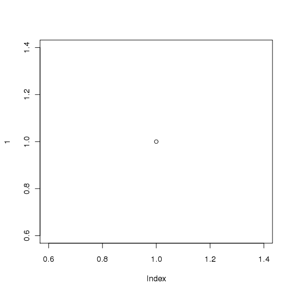

ascii and org
Table of Contents
1 org output
> options(asciiType = "org")
2 some code
> x <- 2 > sqrt(x) [1] 1.414214 > x^2 [1] 4
3 a table
> ascii(head(esoph))
| agegp | alcgp | tobgp | ncases | ncontrols | age | |
|---|---|---|---|---|---|---|
| 1 | 25-34 | 0-39g/day | 0-9g/day | 0.00 | 40.00 | 25-34 |
| 2 | 25-34 | 0-39g/day | 10-19 | 0.00 | 10.00 | 25-34 |
| 3 | 25-34 | 0-39g/day | 20-29 | 0.00 | 6.00 | 25-34 |
| 4 | 25-34 | 0-39g/day | 30+ | 0.00 | 5.00 | 25-34 |
| 5 | 25-34 | 40-79 | 0-9g/day | 0.00 | 27.00 | 25-34 |
| 6 | 25-34 | 40-79 | 10-19 | 0.00 | 7.00 | 25-34 |
4 a list
> ascii(summary(table(1:4, 1:4)))
- Number of cases in table: 4
- Number of factors: 2
-
Test for independence of all factors:
- Chisq = 12, df = 9, p-value = 0.2133
- Chi-squared approximation may be incorrect
5 a figure
> plot(1)

6 some text
2+2 equal to 4.
7 source of this document
Date: 2009-11-23 21:04:53 CET
HTML generated by org-mode 6.33trans in emacs 23